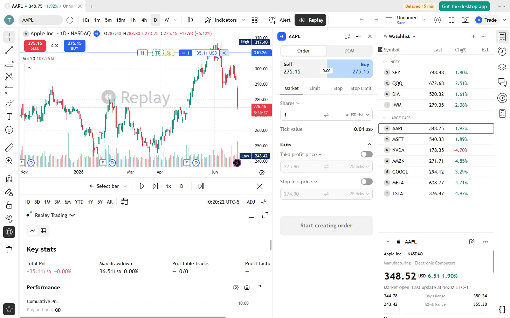

Replay the market, bar by bar.
Go back to any date, hide what came next and play the bars forward at your own pace. Buy and sell with simulated orders, and see how you would have done.

Practise without risking money
Bar replay works on every interval the chart has, from seconds to months, with the indicators and drawings already on your chart.
Pick where to start
Click a bar, choose a date, jump to the first available date, or let the app pick a random bar so you do not know what comes next.
Play at your speed
Play and pause, or step one bar at a time. Nine speeds from 0.1x to 10x, and an update interval finer than the chart's when the data allows.
Keyboard first
Shift + Down plays and pauses, Shift + Right steps forward, and holding it keeps stepping.
Simulated orders
Buy and sell with market, limit, stop and stop limit orders, add take profit and stop loss, and size a trade by the amount you want to risk.
Your paper account
Set the initial capital, in one of 21 currencies, and the commission. Each chart has its own account.
A report of your session
Key stats, the equity curve and the list of your trades, in the same format as the strategy tester.
One chart or all
In a layout with several charts, replay one of them or all at once. Each tab keeps its own replay, and you can continue the last one later.
Back to now
Jump to real time whenever you want to leave the replay.
Questions
Is bar replay free?
Yes, on every interval and every symbol, with no time limit.
How far back can I replay?
Daily bars go back to 2003. Second and minute bars go back five years.
Does it use real money?
No. Orders in replay are simulated. OpenTrader has no broker connection.
Which chart types work?
Candles, bars, lines, areas and Heikin Ashi. Renko, Kagi, point and figure and range bars are not available in replay.
Everything else in the app
Try it. It takes a minute.
Free for Windows, macOS and Linux. Or open the demo in your browser.